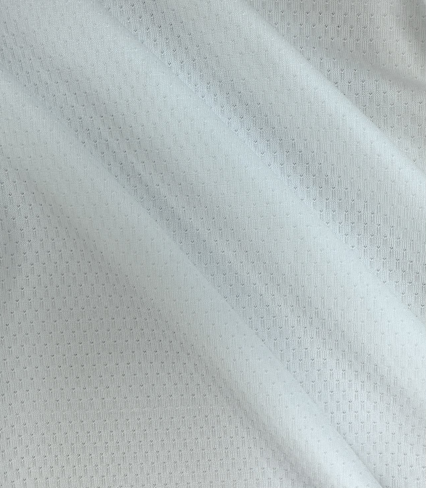
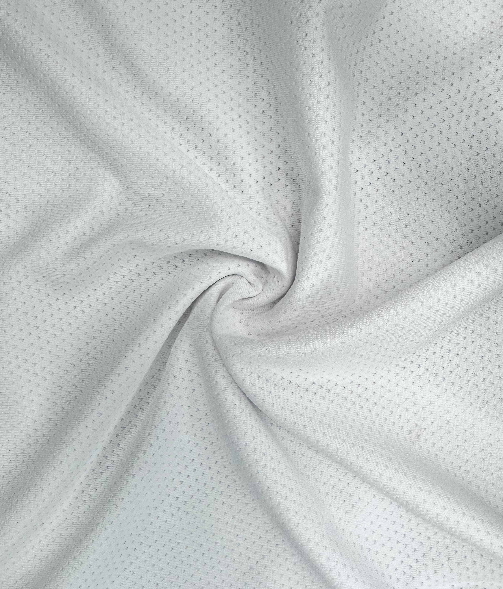
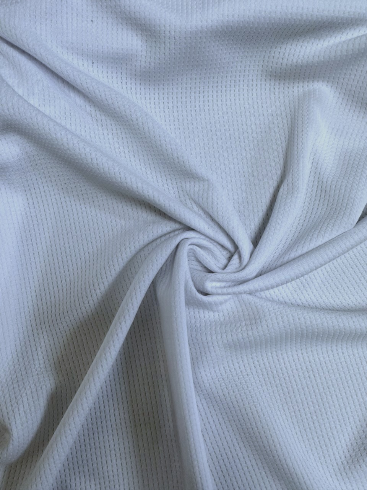

Fulin Textile Supplier
機能布料・數位印刷布專業供應
福麟商行位於三重碧華布街，專營機能布料、數位印刷布與現貨布料， 提供批發、零售、樣布對樣與快速詢問服務。
適合服飾品牌、團體服、印刷加工與批發採購，讓找布、比對與下單更直接。
收購庫存布
整理來自市場與工廠端的布料資源，讓可用布料重新流通。
現貨供應
提供布號、幅寬、碼重、公斤數與倉位資料，方便快速查詢現貨。
樣布對樣
可帶樣、傳圖或提供用途條件，協助你比對接近的布種方向。
About Us
三重碧華布街｜專業布料供應商
福麟商行專營機能布料與數位印刷專用布，提供吸濕排汗布、瑜珈布、 熱昇華印刷布、彈性布料與多種現貨布種。
客戶包含服飾品牌、設計師、團體服、印刷加工與批發採購，從找布、 對樣到現貨查詢，都能依用途快速搭配。
Supplier Advantage
實際看布、快速詢問、方便成交
你可以直接查現貨、加 LINE 詢問，或透過後台持續更新庫存資料。
Services
服務項目
機能布料
適合運動服、團體服與機能服飾使用。
數位印刷布
適用熱昇華印刷、轉印與客製服飾。
現貨庫存查詢
可依布號、幅寬、碼重、公斤數與狀態快速查找。
快速詢問
可直接來電、加 LINE 或傳圖詢問找布。
Printing Fabrics
數位印刷布專區
福麟商行提供各類數位印刷專用布，適用於熱昇華印刷、轉印與客製服飾。 布料會直接影響色彩表現、圖案清晰度與成品手感。

數位印刷布料
適合：客製印刷 / 服飾開發
成份與規格可依實際布號補充。

熱昇華印刷布
適合：團體服 / 運動服
成份與規格可依實際布號補充。

白色透氣機能布
適合：熱昇華印刷 / 團體服 / 運動服
成份與規格可依實際布號補充。
Contact
聯絡福麟商行
可直接加 LINE 詢問布料、傳圖找布或確認現貨資訊。